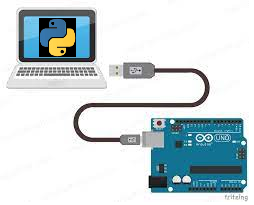

Index
O que esse código faz?¶
Este código de exemplo demonstra como realizar a comunicação serial entre um arduino e um computador, neste exeplo vamos usar um script python.

Um pouquinho de teoria¶
-
Definição de comunicação serial: A comunicação serial é um método de comunicação de dados em que os bits de informações são transmitidos sequencialmente, um após o outro, através de um único canal de comunicação. É uma abordagem simples e comum para transferir dados entre dispositivos, como microcontroladores e computadores. -
Taxa de transmissão (baud rate): A taxa de transmissão, ou baud rate, é a velocidade na qual os bits são transmitidos através do canal de comunicação serial. É medida em bits por segundo (bps). Taxas de transmissão comuns comumente utilizadas incluem 9600, 19200 e 115200 bps. A taxa de transmissão deve ser configurada corretamente em ambos os dispositivos de comunicação (transmissor e receptor) para garantir que os dados sejam transmitidos e recebidos com precisão. -
Protocolos de comunicação serial: Existem vários protocolos de comunicação serial disponíveis, cada um com suas próprias especificações e características. Alguns dos protocolos mais comuns incluem UART (Universal Asynchronous Receiver/Transmitter), SPI (Serial Peripheral Interface) e I2C (Inter-Integrated Circuit). Neste tutorial, estamos usando a comunicação UART através da porta serial disponível no Arduino. -
Aplicações da comunicação serial: A comunicação serial é amplamente utilizada em várias aplicações, como comunicação entre microcontroladores e periféricos (por exemplo, sensores, displays, etc.), comunicação entre computadores e dispositivos eletrônicos (por exemplo, impressoras, modems, etc.), e até mesmo em redes de comunicação industrial (por exemplo, Modbus, Profibus, etc.). -
Vantagens da comunicação serial: Algumas das principais vantagens da comunicação serial incluem sua simplicidade, baixo custo, capacidade de transmitir dados a longas distâncias e baixa contagem de pinos nos dispositivos envolvidos.
Códigos¶
O código funciona como um "Eco", o script Python enviará a mensagem para o Arduino, que a lerá e a enviará de volta. A mensagem será exibida no terminal ou prompt de comando.
void setup() {
Serial.begin(9600); // Inicia a comunicação serial com uma taxa de transmissão de 9600 bps
}
void loop() {
if (Serial.available() > 0) { // Verifica se há dados disponíveis para leitura
String message = Serial.readString(); // Lê a mensagem enviada pelo Python
Serial.println(message); // Envia a mensagem de volta para o Python
}
}
A segunda parte é o código python (lembre-se de criar um arduino_serial.py)
import serial
import time
def main():
ser = serial.Serial('COM3', 9600) # Altere 'COM3' para a porta serial do seu Arduino
time.sleep(2) # Dá tempo para a conexão ser estabelecida
while True:
msg = input("Digite uma mensagem para enviar ao Arduino: ")
ser.write(msg.encode()) # Envia a mensagem para o Arduino
time.sleep(1) # Aguarda a resposta do Arduino
while ser.inWaiting() > 0:
response = ser.readline().decode().strip() # Lê a resposta do Arduino
print("Resposta do Arduino:", response)
if __name__ == "__main__":
main()
Executando o script¶
- Abra o terminal ou prompt de comando e navegue até a pasta onde o arquivo "arduino_serial.py" está localizado.
- Execute o seguinte comando: python arduino_serial.py
- Digite a mensagem que deseja enviar para o Arduino e pressione Enter.
- O script Python enviará a mensagem para o Arduino, que a lerá e a enviará de volta. A mensagem será exibida no terminal ou prompt de comando.
Desafios¶
Desafio 1¶
Faça os ajustes necessários para solucionar o checkpoint.